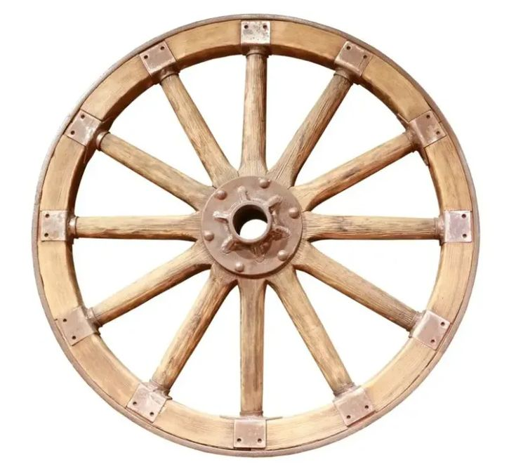

Колесо: основа механики

Колесо считается одним из фундаментальных изобретений в истории человечества. Оно появилось в Месопотамии примерно в IV тысячелетии до нашей эры.
Изначально колесо использовалось не для транспорта, а в качестве гончарного круга. Лишь спустя несколько столетий его начали применять в повозках, что революционизировало торговлю и войны.
Интересные факты о колесе
- Самые древние колеса были сплошными, сделанными из цельного куска дерева.
- Колесо со спицами появилось гораздо позже, около 2000 года до н.э., что сделало повозки легче и быстрее.
- До изобретения колеса люди использовали катки (бревна) для перемещения тяжелых грузов.